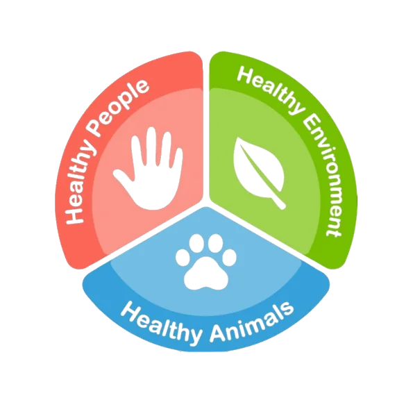
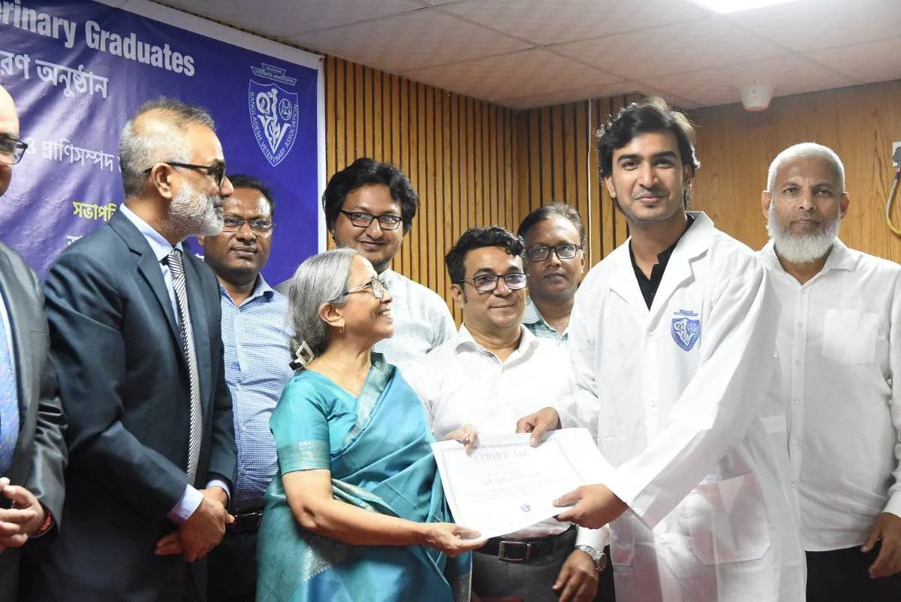

Avian influenza
Mapping South Asian H5 genomic-surveillance gaps to support more representative outbreak preparedness.
Read focusI am a veterinarian and microbiologist working at the intersection of One Health, infectious and zoonotic diseases, antimicrobial resistance, and disease surveillance.


About
I am a trained veterinarian with an MS in Microbiology. My work has focused on AMR, zoonotic disease surveillance, and the One Health approach.
At Navana Pharmaceuticals, I managed a veterinary product portfolio and promoted antimicrobial stewardship. At icddr,b’s Infectious Diseases Division, I served as a Research Officer on the STOP Spillover project, investigating avian-influenza transmission dynamics from live bird markets to the community.
Founded open research infrastructure for Bangladeshi students. Built the largest repository of Bangladeshi research, BORR (www.borrbd.org), and the Open Research Academy (BORA), where we train the next generation of scientists.
Visit BORRSelected work
Mapping South Asian H5 genomic-surveillance gaps to support more representative outbreak preparedness.
Read focusExamining sequencing and genomic-surveillance gaps during Bangladesh’s nationwide measles outbreak.
Read focusCharacterizing stealth methicillin-resistant Staphylococcus aureus from companion-animal wound infections.
Read focusConnect